開卷有益 ／
國中教育會考 ／ 數學 ／ 114 年114 年國中教育會考數學試題與答案
這一頁是民國 114 年國中教育會考數學的整份歷屆試題，共 27 題，題目與標準答案出自心測中心 會考歷屆試題（依著作權法 §9，考試試題不受著作權保護），其中 27 題附有詳解。以下逐題列出題幹、選項與答案；要計時作答或記錄成績，請用線上練習。
線上作答這一科 →
全部 27 題
第 1 題
算式 \( 7^{10} \times 7^{2} \div 7^{4} \) 之值可用下列何者表示？
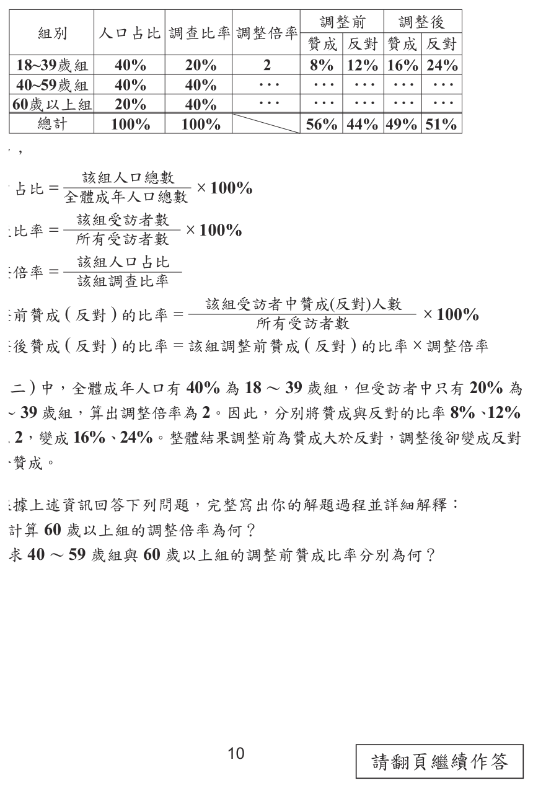
（A） \( 7^{3} \)（B） \( 7^{5} \)（C） \( 7^{8} \)（D） \( 7^{16} \)答案：（C）
詳解與考點 正解：同底數冪相乘時指數相加、相除時指數相減。7¹⁰×7²÷7⁴＝7^(10+2)÷7⁴＝7^(12−4)＝7⁸，故 C 為正解。
A：7³ 把指數的運算規則用錯，沒有算出 10+2−4=8，錯誤。
B：7⁵ 漏算了部分相乘時應相加的指數，錯誤。
D：7¹⁶ 把÷7⁴誤當成×7⁴，算成 10+2+4，錯誤。
本題考點：指數律——同底數相乘，指數相加；同底數相除，指數相減；應依原算式由左至右整理為 10+2−4。
第 2 題
計算 \( (5x^2 - 2x) - (4 - 3x) \) 的結果，與下列何者相同？
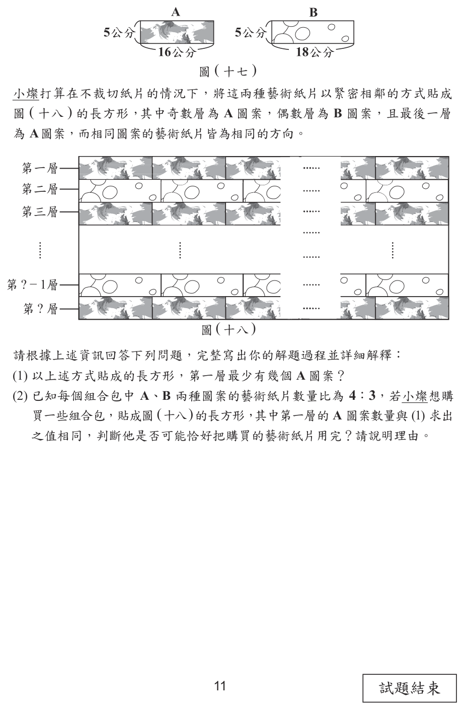
（A） \( 5x^2 - 3x \)（B） \( 5x^2 + x - 4 \)（C） \( 5x^2 - 5x + 4 \)（D） \( 5x^2 - 5x - 4 \)答案：（B）
詳解與考點 正解：題幹是多項式減法，減去整個括號時，括號內每一項都要變號。原式＝（5x²−2x）−（4−3x）＝5x²−2x−4+3x。合併同類項：−2x+3x=x，所以結果＝5x²＋x−4，故 B 為正解。
A：5x²−3x 漏掉常數項 −4，且 x 項沒有正確合併，錯誤。
C：5x²−5x+4 把 −（4−3x）錯當成 ＋4−3x；括號內兩項應同時變號。
D：5x²−5x−4 雖保留了 −4，卻把 −（−3x）仍算成 −3x，應為 ＋3x。
本題考點：多項式減法——減去括號時，每一項均須變號；合併同類項——只合併相同文字與相同次方的項，−2x+3x=x。
第 3 題
圖 ( 一 ) 方格紙格線上的八條等長線段形成一個線對稱圖形。圖中有四條線段標示上號碼，判斷擦去下列哪個選項中的兩條線段後，剩下的圖形不是線對稱圖形？
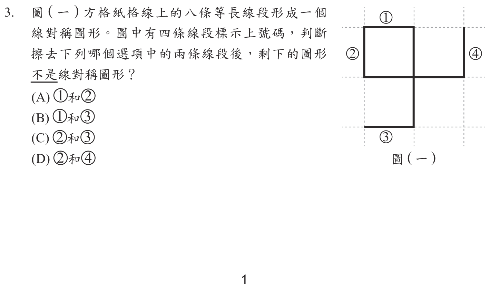
本題選項為上圖中的 A／B／C／D，請對照圖片作答。
答案：（C）
詳解與考點 正解：題幹問擦去後「不是」線對稱圖形，須對每個選項重新找對稱軸。原圖以斜率為1的對角線為對稱軸，①與②、③與④分別互相對應；擦去②、③後，剩餘線段無論以鉛直、水平或對角線翻摺都不能重合，故C為正解。
A：擦去①、②這一對原本相對應的線段，剩餘圖形仍可對原對角線重合，錯誤。
B：擦去①、③後，剩餘圖形可對鉛直線x=1重合，仍是線對稱圖形，錯誤。它看起來不對，是因為原來的對角線配對已改變，但刪去後會產生新的對稱軸。
D：擦去②、④後，剩餘圖形可對水平線y=1重合，仍是線對稱圖形，錯誤。
本題考點：線對稱圖形——沿某一直線翻摺後兩側完全重合才成立；刪去部分線段後須重新檢查是否存在任何對稱軸，不能只沿用原圖的對稱軸。
第 4 題
若二元一次聯立方程式 \( \begin{cases} 37x + 2y = 81 \\ 23x - 2y = 39 \end{cases} \) 的解為 \( \begin{cases} x = a \\ y = b \end{cases} \)，則 \( a + 2b \) 之值為何？
（A） 33（B） 9（C） \(-3\)（D） \(-27\)答案：（B）
詳解與考點 正解：兩式的y係數互為2與−2，選加減消去法可先求x。37x+2y=81與23x−2y=39相加，得60x=120，x=2。代入37×2+2y=81，得74+2y=81，2y=7，y=3.5。a+2b=2+2×3.5=2+7=9，故B為正解。
A：33不是由a+2b=2+7得到；把係數37誤帶入計算會造成此類錯誤。
C：−3把2y=7的正負或a+2b的加法算錯，與2+7=9不符。
D：−27同樣不符a=2、2b=7；將加號誤作減號才可能得到負值。
本題考點：二元一次聯立方程式——找係數相反的未知數後相加消去；求所需式子時可保留2y=7，直接算a+2b=2+7。
第 5 題
如圖 ( 二 )， ∆ABC 中有 AD ，D 點在 BC 上。根據圖中標示的度數，求 p + q + r 之值是多少？
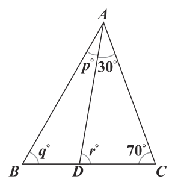
（A） 140（B） 150（C） 160（D） 180答案：（C）
詳解與考點 正解：D在BC上使∠ADB與r成平角，先用三角形內角和求r，再求p+q。△ADC中，r=180−30−70=80。∠ADB=180−80=100。△ABD中，p+q=180−100=80。故p+q+r=80+80=160，C為正解。
A：140少算了部分角度，與p+q=80、r=80相加的160不符。
B：150把r或與r互補的∠ADB算錯，不能同時滿足180−30−70=80。
D：180誤把p、q、r當成同一個三角形的三內角；其中p、q所在三角形的第三角是∠ADB=100，錯誤。
本題考點：三角形內角和——三內角相加為180；平角互補——同一直線上的相鄰兩角相加為180，先分清r與∠ADB。
第 6 題
圖 ( 三 ) 為一坐標平面，若從平面上的點 ( −1 , 2 ) 出發，向下移動再向右移動，則可能移動到下列哪一點？
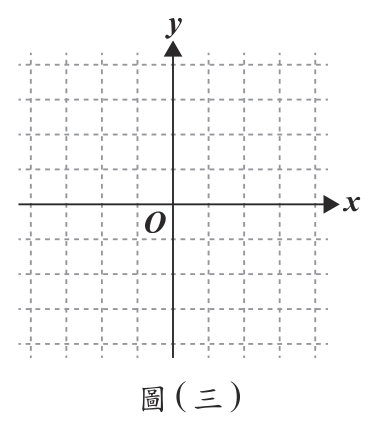
（A） (4,1)（B） (4,3)（C） (−4,1)（D） (−4,3)答案：（A）
詳解與考點 正解：由（−1，2）先向下再向右，終點必須同時有x>−1、y<2。A為（4，1），4>−1且1<2，故A為正解。
B：（4，3）的x=4>−1，但y=3>2，是向上而非向下，錯誤。
C：（−4，1）的y=1<2，但x=−4<−1，是向左而非向右，錯誤。
D：（−4，3）的x=−4<−1且y=3>2，兩個方向都不符，錯誤。
本題考點：坐標平面移動——向右使x變大、向左使x變小；向上使y變大、向下使y變小，終點須同時符合兩個不等式。
第 7 題
圖 ( 四 ) 為某國預估 50 年後的人口變動數直方圖，各組的數值若為正數表示該組人口 50 年後會增加，若為負數表示該組人口 50 年後會減少。根據此圖預估該國 60 歲以上的人口，50 年後會增加或減少多少人？圖 ( 四 )
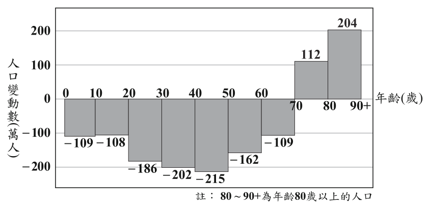
（A） 增加207萬人（B） 增加425萬人（C） 減少109萬人（D） 減少271萬人答案：（A）
詳解與考點 正解：60歲以上包含60～70、70～80、80～90+三組，須連同正負號加總。總變動=−109+112+204=3+204=207（萬人），207為正，表示增加207萬人，故A為正解。
B：425等於112+204再多算數值，沒有正確扣除−109，錯誤。
C：減少109只讀取60～70歲組，漏掉其餘兩組，錯誤。
D：減少271把112與204的正值也誤作減少量；70歲以上兩組應相加為316，錯誤。
本題考點：直方圖讀值——先依年齡範圍完整選取各組；正負數加總——負值要保留負號，總和為正表示增加、為負表示減少。
第 8 題
計算 \( (2\sqrt{3} + \sqrt{6}) \times \sqrt{2} \) 的結果，與下列何者相同？
（A） \( 4\sqrt{3} \)（B） \( 6\sqrt{3} \)（C） \( 2\sqrt{3} + 2\sqrt{6} \)（D） \( 4\sqrt{3} + 2\sqrt{6} \)答案：（C）
詳解與考點 正解：括號外乘√2，選分配律逐項相乘。2√3×√2=2√6；√6×√2=√12=2√3。因此(2√3+√6)×√2=2√6+2√3=2√3+2√6，故C為正解。
A：4√3把2√6與2√3誤當同類根式合併；根號內的6與3不同，錯誤。
B：6√3同樣把不同根式錯誤合併，與逐項計算的2√3+2√6不符。
D：4√3+2√6將2√3×√2誤多乘一個2；正確值為2√6，錯誤。
本題考點：根式乘法——先用分配律逐項相乘；根號相乘可合為同一根號，並將√12化為2√3；根號內不同者不可合併。
第 9 題
某園區想將 20 個無障礙停車位設置在出入口附近，為了符合規定，規劃每個停車位的長度為 600 公分，寬度為 200 公分，並且停車位旁需設置寬度為 150 公分的下車區，相鄰的停車位可以共用下車區。若以圖（五）的方式讓這些停車位相鄰，且兩個相鄰的停車位之間皆有下車區，則圖中的停車位及下車區的總寬度是多少公分？
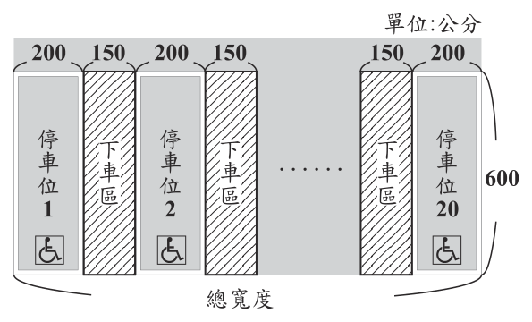
（A） 6850（B） 7000（C） 7150（D） 7200答案：（A）
詳解與考點 正解：20個停車位相鄰時，兩個相鄰停車位之間才有1個共用下車區，因此下車區數量為20−1=19。停車位總寬=20×200=4000（公分）。下車區總寬=19×150=2850（公分）。總寬=4000+2850=6850（公分），故A為正解。
B：7000=20×200+20×150，把下車區誤算為20個，錯誤。
C：7150=4000+21×150，多算2個下車區，等於兩端外側也各加1個，錯誤。
D：7200不是4000加上19個、20個或21個寬150的下車區所得，錯誤。
本題考點：交替排列計數——n個相鄰物件之間有n−1個間隔；總寬度＝各物件寬度總和＋間隔寬度總和。
第 10 題
利用乘法公式判斷，下列算式之值，何者與其他不相同？
（A） \( (106^2 - 4^2) \times (108^2 - 2^2) \)（B） \( (107^2 - 3^2) \times (107^2 - 1^2) \)（C） \( (108^2 - 2^2) \times (106^2 - 2^2) \)（D） \( (109^2 - 1^2) \times (105^2 - 1^2) \)答案：（A）
詳解與考點 正解：題幹要找與其他值不同的式子，先用平方差公式分解，比直接乘開大數有效。A=(106+4)(106−4)×(108+2)(108−2)＝110×102×110×106。B=110×104×108×106；C=110×106×108×104；D=110×108×106×104。B、C、D 的因數都是 104、106、108、110 的重排，乘積相同；A 含有 102 且 110 出現兩次，值不同，故 A 為正解。
B：因數為 110、104、108、106，與 C、D 相同，錯誤。
C：因數為 110、106、108、104，僅是 B、D 的排列不同，錯誤。
D：因數為 110、108、106、104，仍與 B、C 有相同的四個因數，錯誤。
本題考點：平方差公式——a²−b²＝(a+b)(a−b)；比較多個乘積時，先分解並比對因數集合，因數只是順序不同時乘積相等。
第 11 題
阿嘉和小楊都有 5 張分別標示數字 1、2、3、4、5 的紙牌，圖（六）表示兩人的牌中皆有三張牌被自己蓋住的情形。今兩人打算從自己蓋住的紙牌中翻開一張牌，若阿嘉蓋住的牌中每張牌被翻開的機會相等，小楊蓋住的牌中每張牌被翻開的機會相等，則比較兩人翻開的那張牌上的數字，阿嘉比小楊大的機率為何？
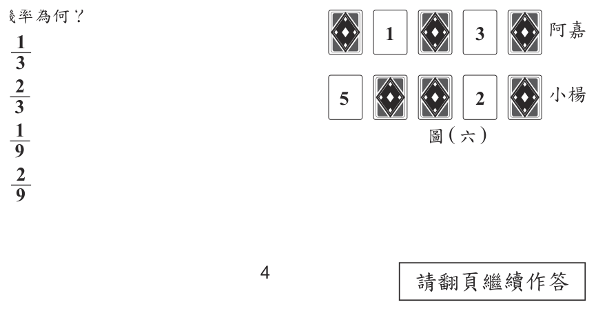
（A） \(\dfrac{1}{3}\)（B） \(\dfrac{2}{3}\)（C） \(\dfrac{1}{9}\)（D） \(\dfrac{2}{9}\)答案：（B）
詳解與考點 正解：兩人都是從各自蓋住的 3 張牌中等機率翻 1 張，先列出 3×3 個等可能組合。阿嘉蓋住 2、4、5，小楊蓋住 1、3、4，總組合數＝3×3=9。阿嘉較大的情形為：2>1，共 1 種；4>1、4>3，共 2 種；5>1、5>3、5>4，共 3 種，合計 1+2+3=6 種。機率＝6÷9=2÷3=2/3，故 B 為正解。
A：1/3 只計到 3 種有利組合，漏掉部分阿嘉數字較大的配對，錯誤。
C：1/9 把 9 種等可能組合誤認為只有 1 種有利組合，錯誤。
D：2/9 只計到 2 種有利組合，漏算 4>1、4>3 或 5 的多種情形，錯誤。
本題考點：等可能樣本空間——兩人各有 3 種選法，總數為 3×3；機率＝有利組合數÷全部等可能組合數。
第 12 題
有甲、乙、丙三種三角形木片，其邊長如圖 ( 七 ) 所示，阿林、小博打算利用這三種木片各自組合成一個正三角錐。首先兩人皆選一片甲當作底面，接著阿林選三片乙當作側面，小博選三片丙當作側面，關於兩人選的木片能不能組合成一個正三角錐，下列判斷何者正確？
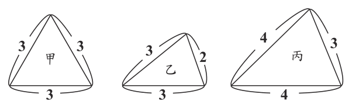
（A） 兩人皆能（B） 兩人皆不能（C） 阿林能，小博不能（D） 阿林不能，小博能答案：（D）
詳解與考點 正解：正三角錐的三個側面要以同長的底邊貼合正三角形底面，因此先辨認側面哪一邊要接到底面甲的邊長 3。乙木片邊長為 3、3、2，其作為等腰側面時底邊是 2，不能貼合底面甲的邊長 3，所以阿林不能組成。丙木片邊長為 4、4、3，其底邊 3 可貼合甲的每一邊，三片丙可繞頂點聚合成正三角錐，所以小博能組成。故 D 為正解。
A：阿林使用的乙木片底邊為 2，無法與甲的邊長 3 密合，錯誤。
B：小博使用的丙木片底邊恰為 3，可以貼合甲，錯誤。
C：將兩人的可否判反，錯誤。它看起來對，是因為乙、丙都是等腰三角形，但是否能組合還要看貼合底面的邊長。
本題考點：正三角錐的面組合——側面與底面共用的邊必須等長；判斷時先找出等腰三角形的底邊，再與底面正三角形的邊長比較。
第 13 題
已知甲方程式為 \( (x-4)^2 = 9 \)，乙方程式為 \( (x+9)^2 = -4 \)。關於甲、乙兩方程式的解的情形，下列敘述何者正確？
（A） 甲有兩個相異的解，乙無解（B） 甲有兩個相異的解，乙有兩個相異的解（C） 甲有兩個相同的解，乙無解（D） 甲有兩個相同的解，乙有兩個相異的解答案：（A）
詳解與考點 正解：完全平方式等於正數時有兩個相異實數解，等於負數時在實數範圍無解。甲： (x−4)²＝9，x−4＝±3，所以 x=4+3=7，或 x=4−3=1，有兩個相異解。乙： (x+9)²＝−4，但任何實數平方都大於或等於 0，不可能等於 −4，所以乙無解。故 A 為正解。
B：乙式左邊是平方，不可能得到負數，不能有兩個相異實數解，錯誤。
C：甲式右邊為 9 而非 0，所以開根後有±3，不是兩個相同的解，錯誤。
D：同時誤判甲為重解、乙有解，錯誤。
本題考點：平方方程式——(x−a)²＝k，k>0 時有兩個相異實數解，k=0 時有兩個相同的解，k<0 時無實數解。
第 14 題
圖（八）為貝可咖啡店的菜單，店家今日準備了 120 杯咖啡和 100 個三明治販售。若今日準備的餐點全部售出且收入共為 8700 元，則售出早餐組合的收入在下列哪一個範圍？
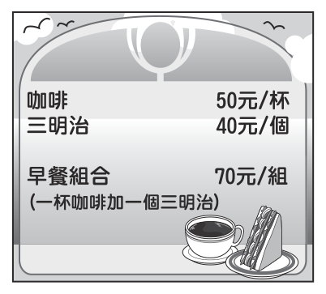
圖（八）貝可咖啡店菜單 品項 價格 咖啡 50元/杯 三明治 40元/個 早餐組合（一杯咖啡加一個三明治） 70元/組
（A） 4300 ～ 4399 元（B） 4400 ～ 4499 元（C） 4500 ～ 4599 元（D） 4600 ～ 4699 元答案：（C）
詳解與考點 正解：早餐組合會同時用掉 1 杯咖啡與 1 個三明治，關鍵是以組合數設未知數後扣除各自庫存。設售出早餐組合 x 組，則單賣咖啡有 120−x 杯，單賣三明治有 100−x 個。收入式為 50(120−x)＋40(100−x)＋70x=8700。展開得 6000−50x+4000−40x+70x=8700；合併得 10000−20x=8700；移項得 −20x=−1300；x=65。早餐組合收入=70×65=4550 元，4550 在 4500～4599 元，故 C 為正解。
A：4300～4399 元不含 4550 元，範圍偏低。
B：4400～4499 元不含 4550 元，範圍仍偏低。
D：4600～4699 元不含 4550 元，範圍偏高。
本題考點：一元一次方程式應用——先設組合數 x，再把被組合用掉的咖啡與三明治分別寫成原數量−x；代數檢核——解出 x 後代回收入式確認總收入，再計算題目所問的組合收入。
第 15 題
如圖 ( 九 )，數線上由左至右有 A(a)、B(b)、C(c)、D(d)、E(e) 五點，且 AB = BC = CD = DE。若原點在 AE 上，且 |a| + |b| = |e| ，則下列關於原點位置的敘述，何者正確？
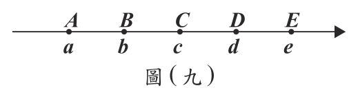
（A） 在BC上且較接近B點（B） 在BC上且較接近C點（C） 在CD上且較接近C點（D） 在CD上且較接近D點答案：（B）
詳解與考點 正解：本題條件為「｜a｜＋｜b｜＝｜e｜」（官方試題以絕對值表示，轉錄時絕對值符號易脫落）。設相鄰間距為 d（d>0），令 A=a，則 B=a+d、C=a+2d、E=a+4d。因原點在 AE 上，a<0、e>0，故｜a｜＝−a、｜e｜＝a+4d。依 b 的正負分段討論：若 b=a+d≧0，條件成為 −a＋(a+d)＝a+4d，得 a＝−3d，此時 b＝−2d<0，與假設矛盾，捨去。故 b<0，條件成為 −a−(a+d)＝a+4d，−3a=5d，a＝−5d/3。於是 B＝−5d/3+d＝−2d/3，C＝−5d/3+2d=d/3，原點 0 在 B、C 之間，到 B 的距離＝2d/3，到 C 的距離＝d/3，較接近 C，故 B 為正解。
A：原點雖在 BC 上，但到 B 的距離 2d/3 大於到 C 的距離 d/3，錯誤。
C：C=d/3 已在原點右側，所以原點不在 CD 上，錯誤。
D：原點不在 CD 上，也不可能較接近 D，錯誤。
本題考點：數線等距與絕對值——相鄰點可用首點加上間距表示；含絕對值的條件要依各點正負分段討論；先求 B、C 的正負，再判斷原點所在區間與較近端點。
第 16 題
如圖 ( 十 )，∆ABC 中，D 點為 AB 的中點，E 點在 AB 上，F 點在 AC 上，且 EF // BC。若 AF = 7，FC = 3，則下列敘述何者正確？
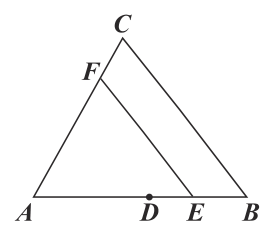
（A） DE>EB，DF與EC平行（B） DE>EB，DF與EC不平行（C） DE<EB，DF與EC平行（D） DE<EB，DF與EC不平行答案：（D）
詳解與考點 正解：EF//BC 觸發平行線截比例線段，AE:AB=AF:AC；判斷 DF 與 EC 是否平行，則看共頂角 A 的三角形 ADF 與 AEC，須 AD:AE=AF:AC。AF=7、FC=3，故 AC=10，AF:AC=7:10。因 EF//BC，AE:AB=AF:AC=7:10；D 為 AB 中點，AD:AB=1:2=5:10，由圖 E 在 D 右側。故 DE=AE-AD=(7/10-5/10)AB=2/10 AB，EB=AB-AE=3/10 AB，得 DE<EB。再看平行：AD:AE=(5/10):(7/10)=5:7，AF:AC=7:10，因 5×10=50≠7×7=49，兩比不等，DF 與 EC 不平行，故 D 為正解。
A：DE=2/10 AB、EB=3/10 AB，實為 DE<EB，並非 DE>EB；且 AD:AE=5:7≠AF:AC=7:10，DF 與 EC 也不平行，兩處皆錯。
B：DE=2/10 AB、EB=3/10 AB，故 DE<EB，B 主張的 DE>EB 錯誤；DF 與 EC 不平行雖對，整個選項仍錯。
C：DE<EB 正確，但 DF//EC 錯誤——DF//EC 須 AD:AE=AF:AC，而 AD:AE=5:7≠AF:AC=7:10，方向相近不代表平行。
本題考點：平行線截比例線段——EF//BC 時 AE:AB=AF:AC；平行判定——DF//EC 須共頂角兩邊對應比例相等，即 AD:AE=AF:AC，不可誤用 AD:AB 或只憑外觀；中點性質——D 為中點得 AD:AB=1:2。
第 17 題
圖 ( 十一 ) 是某種螺絲釘上螺紋的示意圖，圖中的虛線皆為水平線或鉛垂線，圖上標示出角度，也標示出水平線間或鉛垂線間的距離。根據圖中的標示，判斷此種螺絲釘的螺紋深度是螺紋間距的多少倍？
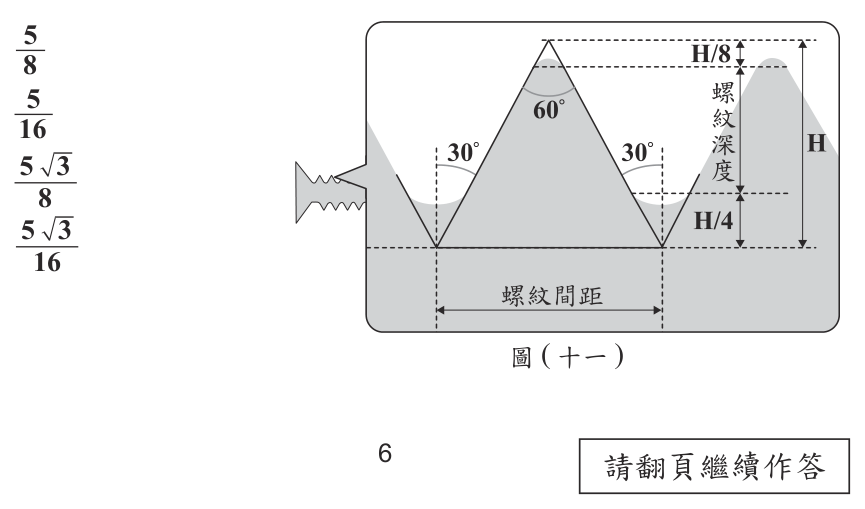
（A） \(\dfrac{5}{8}\)（B） \(\dfrac{5}{16}\)（C） \(\dfrac{5\sqrt{3}}{8}\)（D） \(\dfrac{5\sqrt{3}}{16}\)答案：（D）
詳解與考點 正解：題幹要比較螺紋深度與間距，先把圖中總鉛垂高度 H 分成各段，再用 30°、60°三角比求水平距。螺紋深度＝H−H/8−H/4=H−H/8−2H/8=5H/8。由圖中的 30°、60°直角三角形換算相鄰牙底的水平間距，可得間距＝2H√3/3。深度÷間距＝(5H/8)÷(2H√3/3)＝(5H/8)×(3/2H√3)＝15/16√3=5√3/16，故 D 為正解。
A：5/8 只算出螺紋深度占總高度的比例，沒有再除以間距，錯誤。
B：5/16 漏掉由特殊角三角比產生的√3，錯誤。
C：5√3/8 的分母少除以 2，錯誤。
本題考點：特殊角三角比——先將鉛垂高度分段，求出螺紋深度；再以 tan30°、tan60°換算水平間距；最後以「深度÷間距」求倍數。
第 18 題
已知 \(a\)、\(b\)、\(c\) 皆為正整數，且 \(a\)、\(b\) 兩數的最大公因數與最小公倍數分別為 11 與 88。關於 \(a\)、\(b\)、\(c\) 三數的最大公因數與最小公倍數，甲、乙兩人分別提出看法如下：
甲：\(a\)、\(b\)、\(c\) 三數的最大公因數可能比 11 大
乙：\(a\)、\(b\)、\(c\) 三數的最小公倍數可能比 88 小
對於甲、乙兩人的看法，下列判斷何者正確？
（A） 甲、乙皆正確（B） 甲、乙皆錯誤（C） 甲正確，乙錯誤（D） 甲錯誤，乙正確答案：（B）
詳解與考點 正解：加入第三個正整數 c 後，三數的最大公因數必同時整除 a、b，因此不可能大於 a、b 的最大公因數 11；甲錯誤。三數的最小公倍數必同時是 a、b 的公倍數，因此必為 a、b 最小公倍數 88 的倍數，不可能小於 88；乙也錯誤。兩人皆錯誤對應 B，故 B 為正解。
A：甲說三數最大公因數可能大於 11，違反三數最大公因數必整除 a、b 最大公因數的性質，錯誤。
C：甲其實錯誤；乙主張三數最小公倍數可能小於 88 也錯誤，因此不是甲正確、乙錯誤。
D：乙的判斷錯誤，因加入 c 不會讓原有 a、b 的最小公倍數縮小。
本題考點：最大公因數與最小公倍數——增加一個數時，最大公因數只會變小或不變；最小公倍數只會變大或不變。
第 19 題
圖（十二）為金銀河影城的價目表。某社團 16 人去此影城看電影，打算以比賽獎金 6000 元購買電影票、爆米花與飲料。若要讓每人拿到一張電影票和一杯飲料，則最多可買多少盒爆米花？
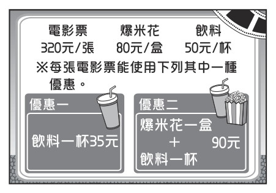
圖（十二）金銀河影城價目表 項目 價格 備註 電影票 320 元/張 每張電影票能使用下列其中一種優惠 爆米花 80 元/盒 飲料 50 元/杯 優惠一 飲料一杯 35 元 優惠二 爆米花一盒＋飲料一杯 90 元
（A） 3（B） 4（C） 5（D） 6答案：（C）
詳解與考點 正解：題幹每人都要 1 張電影票與 1 杯飲料，且每張票只能選一種優惠，設以優惠二購買的爆米花為 m 盒。電影票費用＝16×320=5120 元，剩餘預算＝6000−5120=880 元。m 盒優惠二各含 1 盒爆米花與 1 杯飲料，費用＝90m；其餘 16−m 杯飲料用優惠一，費用＝35(16−m)。列式：90m+35(16−m)≤880；90m+560−35m≤880；55m≤320；m≤320÷55=5.8…。m 為整數，最多 m=5，故 C 為正解。
A：3 盒未用盡可行預算；代入 m=4 時，費用＝90×4+35×12=360+420=780，仍不超過 880，錯誤。
B：4 盒仍可再增加；代入 m=5 時，費用＝90×5+35×11=450+385=835，仍不超過 880，錯誤。
D：6 盒時，費用＝90×6+35×10=540+350=890，大於 880，超出預算，錯誤。它看起來對，是因為優惠二已含飲料，若沒有把剩餘 10 杯飲料計入便會低估費用。
本題考點：預算最佳化——先扣除固定的電影票費用；優惠二每盒同時包含爆米花與 1 杯飲料；以整數 m 列不等式，取不超過預算的最大整數解。
第 20 題
圖 ( 十三 ) 為一張五邊形紙片 ABCDE，F 點在 CD 上，且以 BE、BF、FE 為摺線將紙片向內摺至同一平面後，A、C、D 恰重疊在同一點 P，如圖 ( 十四 ) 所示。若 BE > FE > BF，則根據圖 ( 十四 ) 中標示的角，判斷下列敘述何者正確？圖 ( 十三 ) 圖 ( 十四 )
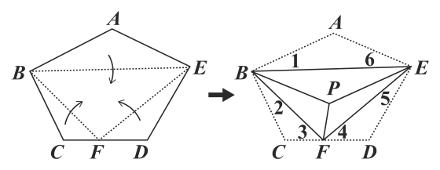
（A） ∠3+∠4=90°，∠1+∠2>∠5+∠6（B） ∠3+∠4=90°，∠1+∠2<∠5+∠6（C） ∠3+∠4≠90°，∠1+∠2>∠5+∠6（D） ∠3+∠4≠90°，∠1+∠2<∠5+∠6答案：（A）
詳解與考點 正解：摺紙後 A、C、D 重疊於 P，摺線會保留對應角度。由 C、D 在原來的直線 CD 上，以及圖中各摺角的對應關係，可得∠3＋∠4=90°。再比較 B、E 兩側的角和：BE>FE>BF，依三角形中長邊對大角的關係，BF 最短所對的 B 側張角較大，因此∠1＋∠2＞∠5＋∠6。兩個判斷都符合 A，故 A 為正解。
B：∠3＋∠4=90°正確，但把 B、E 兩側角和的不等號方向判反，錯誤。
C：∠3＋∠4 應為 90°，且角和關係也不是本項所述，錯誤。
D：∠3＋∠4 應為 90°，又將角和不等號判反，錯誤。
本題考點：摺紙角度——翻摺前後對應角相等，重疊與直線關係可導出互補或直角；三角形中長邊對大角，判讀邊長不等式時要正確對應其對角。
第 21 題
坐標平面上有二次函數 \( y = -(x+7)^2 + 12 \) 的圖形，今將此圖形向右平移 10 單位，平移過程中此圖形與 y 軸的交點也會跟著變化。假設此圖形與 y 軸的交點為 P，判斷在平移過程中，P 點位置的變化情形為下列何者？
（A） 持續向下（B） 持續向上（C） 先向下再向上（D） 先向上再向下答案：（D）
詳解與考點 正解：題幹固定觀察平移圖形與 y 軸的交點，因此令平移量為 t，直接代 x=0 追蹤交點高度。原圖向右平移 t 單位後，y＝−[x−(t−7)]²＋12，0≤t≤10。代入 x=0，交點高度 y＝−(t−7)²＋12。t 從 0 增至 7 時，(t−7)²由 49 減至 0，y 由 −37 增至 12，P 向上；t 從 7 增至 10 時，(t−7)²由 0 增至 9，y 由 12 減至 3，P 向下。因此 P 先向上再向下，故 D 為正解。
A：t=0 到 7 時交點高度由 −37 上升至 12，不是持續向下，錯誤。
B：t=7 到 10 時交點高度由 12 降至 3，不是持續向上，錯誤。
C：平方項在 t=7 前遞減、之後遞增，因前面有負號，實際變化方向是先上後下，錯誤。
本題考點：二次函數平移——向右平移 t 後以 x 替換為 x−t；追蹤 y 軸交點時代入 x=0；−(t−7)²＋12 在 t=7 取得最大值。
第 22 題
如圖（十五），\( \triangle ADG \) 的頂點 \( G \) 為 \( \triangle ABC \) 的重心，\( \overline{DG} \) 與 \( \overline{AB} \) 相交於 \( E \) 點。若 \( \overline{DE} : \overline{EG} = 3 : 2 \)，\( \overline{AE} : \overline{EB} = 3 : 4 \)，則 \( \triangle ADG \) 面積為 \( \triangle ABC \) 面積的多少倍？
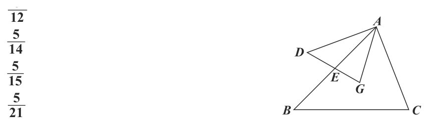
（A） \(\dfrac{5}{12}\)（B） \(\dfrac{5}{14}\)（C） \(\dfrac{5}{15}\)（D） \(\dfrac{5}{21}\)答案：（B）
詳解與考點 正解：已知線段分比與重心位置，採座標法可直接算面積比。設 A=(0,0)、B=(7,0)，因 AE：EB=3:4，所以 E=(3,0)。設 C=(cx,cy)，則重心 G=((0+7+cx)÷3,(0+0+cy)÷3)＝((7+cx)÷3,cy÷3)。D、E、G 共線，且 D 在 E 的另一側、DE：EG=3:2，所以 D=E−(3÷2)(G−E)＝((8−cx)÷2,−cy÷2)。△ADG 面積＝1÷2×|xD×yG−yD×xG|＝1÷2×|(8−cx)cy÷6+cy(7+cx)÷6|＝1÷2×15cy÷6=5cy÷4。△ABC 面積＝1÷2×7×cy=7cy÷2。因此 △ADG：△ABC=(5cy÷4)÷(7cy÷2)＝5cy÷4×2÷(7cy)＝5/14，B 為正解。
A：若保留已算出的 △ADG 面積 5cy/4，比例 5/12 會反推出 △ABC 面積＝(5cy/4)÷(5/12)＝3cy=12cy/4；但正確面積是 7cy/2=14cy/4，分母少算了 2cy/4。
C：比例 5/15 會反推出 △ABC 面積＝(5cy/4)÷(5/15)＝15cy/4；這比正確的 14cy/4 多了 cy/4，表示面積除法中的分母取錯。
D：比例 5/21 會反推出 △ABC 面積＝(5cy/4)÷(5/21)＝21cy/4；正確值是 14cy/4，等於把比較基準多算成 3/2 倍。
本題考點：重心與線段分比——先依 AE：EB=3:4 設定 E，再用 DE：EG=3:2 並注意 D、G 分居 E 兩側；座標面積法——分別算出 5cy/4 與 7cy/2，相除後未知數 cy 會約掉。
第 23 題
如圖（十六），\(\triangle ABC\) 的三個頂點都在一圓上，固定 \(A\) 點將 \(\triangle ABC\) 依順時針方向旋轉，旋轉後的三角形為 \(\triangle AB'C'\)，且 \(B'\) 會落在同一圓上，其中 \(\overline{AB}\) 與 \(\overline{AC'}\) 的夾角為 \(x^\circ\)。若 \(\overparen{BC}=54^\circ\)，\(\overparen{CA}=62^\circ\)，則 \(x\) 值為何？
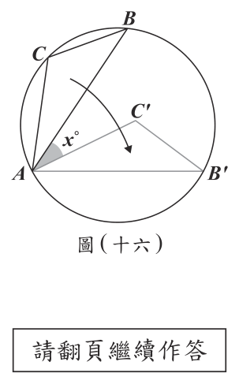
（A） 27（B） 31（C） 32（D） 37答案：（D）
詳解與考點 正解：旋轉保留長度與角度，且圓中等弦對等弧，所以先由已知弧求旋轉角。∠BAC=54÷2=27°。弧 AB=360−54−62=244°，故不含 C 的另一小弧 AB=360−244=116°。旋轉後 AB′＝AB，因此弧 AB′也為 116°；B′在 A 的另一側，弧 BB′＝244−116=128°。∠BAB′＝128÷2=64°，而∠B′AC′＝∠BAC=27°。所以 x＝∠BAC′＝64−27=37，故 D 為正解。
A：27 只算出∠BAC，沒有再利用旋轉後 B′的位置求 x，錯誤。
B：31 是把弧 CA=62°直接除以 2，該角不是題目所求的 x，錯誤。
C：32 未依等弦對等弧確定 B′位置與旋轉角，錯誤。
本題考點：圓周角——圓周角＝所對弧度數÷2；旋轉保長保角；同圓中等弦對等弧，可用 AB′＝AB 確定 B′所對弧與旋轉角。
小桃買了一輛變速自行車，在騎乘時可以切換不同的前齒輪齒數與後齒輪齒數的組合來適應各種坡度。已知這輛自行車的前齒輪有3種齒數，後齒輪有6種齒數，如表（一）所示，前齒輪齒數與後齒輪齒數的組合有3×6＝18種，因此這輛自行車稱為18段變速自行車。已知，齒輪比＝前齒輪齒數÷後齒輪齒數，它代表前齒輪轉動一圈會帶動後齒輪轉動多少圈，齒輪比越大，自行車踩起來越費力。
第 24 題
小桃騎乘該自行車時，原本使用的前齒輪為 33 齒，後齒輪為 21 齒。根據上文，他從原本的前後齒輪組合切換成下列四種組合中的哪一種後，踩起來最費力？
表（一） 齒輪 齒數 前齒輪 22齒、33齒、44齒 後齒輪 14齒、16齒、18齒、21齒、24齒、28齒
（A） 前齒輪不變，後齒輪切換為 18 齒（B） 前齒輪不變，後齒輪切換為 24 齒（C） 前齒輪切換為 22 齒，後齒輪不變（D） 前齒輪切換為 44 齒，後齒輪不變答案：（D）
詳解與考點 正解：踩踏輕重取決於前齒輪齒數÷後齒輪齒數的齒輪比，比值越大，踩 1 圈帶動後輪越多圈，越費力。A：33÷18=11/6≈1.83；B：33÷24=11/8≈1.38；C：22÷21≈1.05；D：44÷21≈2.10。四者中 D 的比值最大，故 D 為正解。
A：11/6≈1.83，比原組合 33÷21≈1.57 大，確實較費力，但小於 D 的 44÷21≈2.10，錯誤。
B：11/8≈1.38 小於原組合 1.57，較省力，錯誤。
C：22÷21≈1.05 是四者中較小的比值，較省力，錯誤。
本題考點：齒輪比——齒輪比＝前齒輪齒數÷後齒輪齒數；前大後小使比值變大、較費力；比較時把每種組合都化為同一比值。
小桃買了一輛變速自行車，在騎乘時可以切換不同的前齒輪齒數與後齒輪齒數的組合來適應各種坡度。已知這輛自行車的前齒輪有3種齒數，後齒輪有6種齒數，如表（一）所示，前齒輪齒數與後齒輪齒數的組合有3×6＝18種，因此這輛自行車稱為18段變速自行車。已知，齒輪比＝前齒輪齒數÷後齒輪齒數，它代表前齒輪轉動一圈會帶動後齒輪轉動多少圈，齒輪比越大，自行車踩起來越費力。
第 25 題
即使是不同的前齒輪齒數與後齒輪齒數的組合，仍可能產生相同的齒輪比，因此小桃這輛 18 段變速自行車實際上只能夠產生 14 種不同的齒輪比。根據上文，判斷這輛自行車切換前齒輪齒數與後齒輪齒數的組合時，下列哪一個齒輪比有最多種組合？
表（一） 齒輪 齒數 前齒輪 22齒、33齒、44齒 後齒輪 14齒、16齒、18齒、21齒、24齒、28齒
（A） \(\dfrac{11}{6}\)（B） \(\dfrac{11}{7}\)（C） \(\dfrac{11}{8}\)（D） \(\dfrac{11}{9}\)答案：（B）
詳解與考點 正解：題幹要找能由最多前、後齒輪組合約分得到的齒輪比，應依題組表格逐一配對。前齒輪有 22、33、44 齒，後齒輪有 14、16、18、21、24、28 齒。11/7 可由 22/14、33/21、44/28 得到，共 3 組，故 B 為正解。
A：11/6 可由 33/18、44/24 得到，共 2 組；22/12 雖也等於 11/6，但表格沒有 12 齒的後齒輪，不能計入。
C：11/8 可由 22/16、33/24 得到，共 2 組；44/32 所需的 32 齒後齒輪不在表格中。
D：11/9 只能由 22/18 得到，共 1 組；所需的 27、36 齒後齒輪都不在表格中。
本題考點：等值比——前後齒數同乘或同除相同非零數，比值不變；判斷組合數時，須逐一檢查題組表格內所有實際前、後齒數配對。
第 26 題
某民調公司訪問 A 市的成年民眾對於某項政策的態度，並依年齡分成 3 組。因受訪者的年齡分布與全體成年人口的年齡分布有落差，於是利用「調整倍率」讓調整後的結果更接近全體的民意，如表（二）所示。
其中，
人口占比 \( = \dfrac{\text{該組人口總數}}{\text{全體成年人口總數}} \times 100\% \)
調查比率 \( = \dfrac{\text{該組受訪者數}}{\text{所有受訪者數}} \times 100\% \)
調整倍率 \( = \dfrac{\text{該組人口占比}}{\text{該組調查比率}} \)
調整前贊成（反對）的比率 \( = \dfrac{\text{該組受訪者中贊成（反對）人數}}{\text{所有受訪者數}} \times 100\% \)
調整後贊成（反對）的比率 \( = \text{該組調整前贊成（反對）的比率} \times \text{調整倍率} \)
表（二）中，全體成年人口有 40% 為 18～39 歲組，但受訪者中只有 20% 為 18～39 歲組，算出調整倍率為 2。因此，分別將贊成與反對的比率乘 8%、12%，乘以 2，變成 16%、24%。整體結果調整前為贊成大於反對，調整後卻變成反對大於贊成。
請根據上述資訊回答下列問題，完整寫出你的解題過程並詳細解釋：
（1）計算 60 歲以上組的調整倍率為何？
（2）求 40～59 歲組與 60 歲以上組的調整後贊成比率分別為何？
表（二） 組別 人口占比 調查比率 調整倍率 調整前贊成 調整前反對 調整後贊成 調整後反對 18～39 歲組 40% 20% 2 8% 12% 16% 24% 40～59 歲組 40% 40% …… …… …… …… …… 60 歲以上組 20% 40% …… …… …… …… …… 總計 100% 100% 56% 44% 49% 51%
標準答案未收錄
詳解與考點 考點：用「調整倍率＝人口占比÷調查比率」與「調整後比率＝調整前比率×調整倍率」兩條定義，配合總計欄列方程組求解。
（1）由定義，60 歲以上組調整倍率＝20%÷40%＝0.5。（同理 18～39 歲組為 40%÷20%＝2、40～59 歲組為 40%÷40%＝1，與表中相符。）
（2）三組調整倍率依序為 2、1、0.5。設 40～59 歲組調整前贊成比率為 a、60 歲以上組為 b。由調整前贊成總計：8%＋a+b=56%，得 a+b=48%……（甲）。由調整後贊成總計：8%×2+a×1+b×0.5=49%，即 a+0.5b=33%……（乙）。（甲）－（乙）：0.5b=15%，故 b=30%，代回得 a=18%。
答：40～59 歲組調整前贊成比率為 18%，60 歲以上組為 30%。
驗算（反對欄）：各組贊成＋反對應等於調查比率，故三組調整前反對為 12%、22%、10%，總計 44%；調整後反對＝12%×2+22%×1+10%×0.5=51%，皆與表中一致，答案無誤。
第 27 題
2. 16 公分 × 5 公分、18 公分 × 5 公分的長方形，如圖( 十七) 所示。圖( 十七) 小燦打算在不裁切紙片的情況下，將這兩種藝術紙片以緊密相鄰的方式貼成圖( 十八) 的長方形，其中奇數層為 A 圖案，偶數層為 B 圖案，且最後一層為 A 圖案，而相同圖案的藝術紙片皆為相同的方向。圖( 十八) 請根據上述資訊回答下列問題，完整寫出你的解題過程並詳細解釋： (1) 以上述方式貼成的長方形，第一層最少有幾個 A 圖案？ (2) 已知每個組合包中 A、B 兩種圖案的藝術紙片數量比為 4：3，若小燦想購買一些組合包，貼成圖(十八)的長方形，其中第一層的 A 圖案數量與 (1
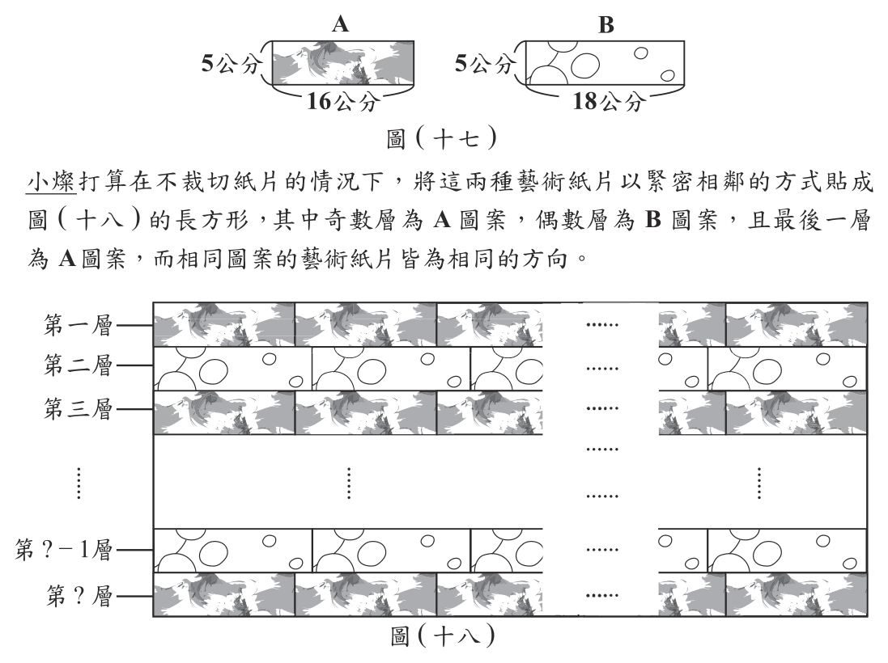
本題選項為上圖中的 A／B／C／D，請對照圖片作答。
標準答案未收錄
詳解與考點 考點：最小公倍數、奇偶分層與比例判斷。
每層高 5 公分、紙片橫向緊密並排要拼成完整長方形，各層橫向總長須相等。A 層長為 16 的倍數、B 層長為 18 的倍數，故總長須為 16 與 18 的公倍數。16=2⁴、18=2×3²，最小公倍數＝144。
（1）取最小總長 144 公分，第一層為 A 層，個數＝144÷16=9，故第一層最少 9 個 A。
（2）第一層 A 數與（1）相同，故總長固定為 144，每個 A 層含 9 個 A、每個 B 層含 144÷18=8 個 B。奇數層為 A、偶數層為 B，最後一層為 A，故總層數 n 為奇數，A 層有（n+1）／2 層、B 層有（n-1）／2 層。A 總數＝9×（n+1）／2，B 總數＝8×（n-1）／2=4（n-1）。組合包比 4:3，恰好用完須 3×A 總數＝4×B 總數：27（n+1）＝32（n-1），27n+27=32n-32，5n=59，n=11.8。但 n 須為正奇數，11.8 不合，故無法恰好把紙片用完。
其他年度
回到國中教育會考數學的年度總覽 ，
或到國中教育會考題庫首頁 看其他科目。
題目與標準答案出自心測中心 會考歷屆試題（依著作權法 §9，考試試題不受著作權保護）。依中華民國《著作權法》第 9 條第 1 項第 5 款，
依法令舉行之各類考試試題不得為著作權之標的，得自由利用。詳解為 AI 整理的學習輔助，
並非官方標準答案 ；中華民國會修訂，引用前請對照現行版本查證。